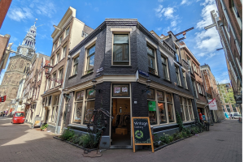
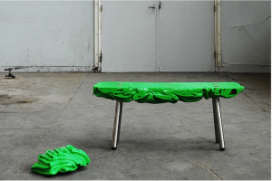

Elk ontwerp heeft zijn eigen identiteit
Millieubels probeert met elke bank een verhaal te vertellen. Ze stoppen niet alleen gerecycled materiaal in hun meubels, maar ook een boodschap die reflecteert op de impact van plastic consumptie. Met hun unieke, futuristische ontwerpen proberen ze mensen nieuwe mogelijkheden van recycelen te laten zien.
The Upcycle
"Waste is food for creativity", is de slogan van de lokale upcycle winkel The Upcycle. Waar de meeste mensen afval zien, zien zij goud, en met behulp van creatieve teamleden transformeren zij afval tot sieraden, alledaagse voorwerpen en kleding. The upcycle heeft ook veel ervaring met het recycelen van plastic afval, en samen met Millieubels hebben ze wederom de grenzen verlegd van upcyclen en kunstzinnige ontwerpen. Afval is ten slotte maar materiaal op de verkeerde plek.
catalogus
-
Naam: Overlap
Versie: 1.7
Datum: 23 juli 2023
De inspiratie voor Overlap komt van de vormen van opgehoopte plastic afval. Deze bank laat zien hoe ruwe vormen getransformeerd kunnen worden en hoe hergebruik prachtig kan zijn. Elk stuk is zorgvuldig uitgekozen en samengevoegd, waardoor je een uniek meubelstuk krijgt dat duurzaam design omarmt.
-
Naam: Y1in Y4ang
Versie 3.0
Datum: 5 mei 2023
Y1in Y4ang brengt oude materialen in balans, geïnspireerd door de Yin en Yang-filosofie. Het symboliseert de harmonie tussen tegenstellingen en laat zien hoe gerecyclede items samen een evenwichtig en esthetisch ontwerp kunnen vormen.
-
Naam: Axis
Versie: 1.2.5
Datum: 13 December 2023
Axix, een creatie geboren uit het samenspel van diverse materialen, weerspiegelt de eindeloze mogelijkheden van hergebruik. Geïnspireerd door beweging en verandering, symboliseert dit meubelstuk de cyclus van transformatie, waarin oude elementen een nieuw leven en een uniek ontwerp vinden.